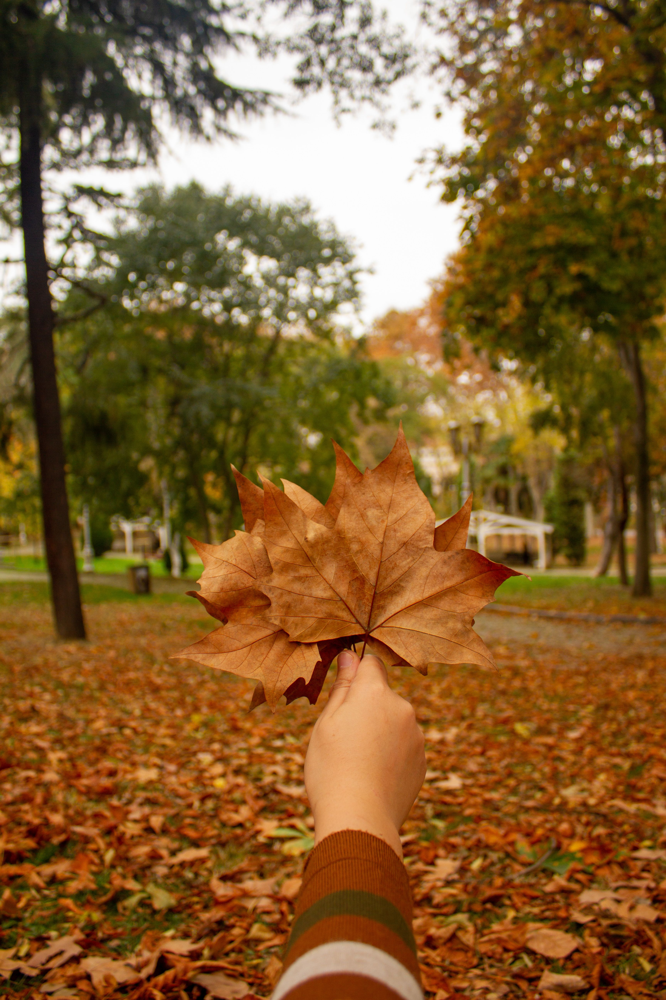

Coloring the Web Assignment

<table>
<caption>Coloring the Web Assignment</caption>
  <tr>
   <th style="font-family: 'Brush Script MT', 'Comic Sans MS', cursive;" colspan="4">Autumn Color Scheme</th>
  </tr>
  <tr>
    <th style="background-color: #FFC857;">Golden Pollen</th><!--COLORED CELLS AND COLOR NAMES-->
    <th style="background-color: #B20D30;">Carmine</th>
    <th style="background-color: #EE8434;">Vivid Tangerine</th>
    <th style="background-color: #C95D63;">Lobster Pink</th>
  </tr>
  <tr>
    <td>FFC857</td><!--COLOR HEX VALUES-->
    <td>B20D30 </td>
    <td>EE8434</td>
    <td>C95D63</td>
  </tr>
  <tr>
    <td> 255, 200, 87</td><!--RGB VALUES-->
    <td>178, 13, 48</td>
    <td>238, 132, 52</td>
    <td>201, 93, 99</td>
  </tr>
   <tr>
    <td> 40, 100, 67</td><!--HSL VALUES-->
    <td>347, 86, 37</td>
    <td>26, 85, 57</td>
    <td>357, 50, 58</td>
  </tr>
</table>
